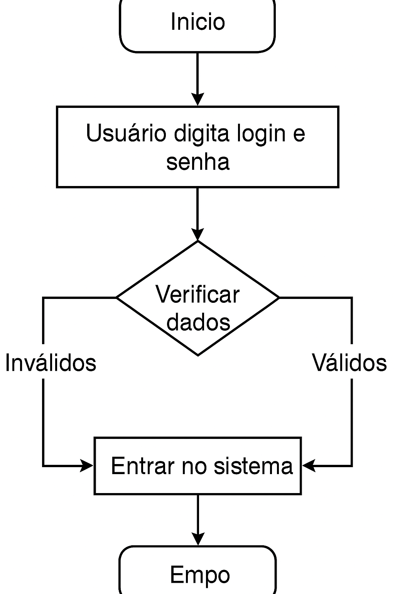

Scrum é uma metodologia ágil usada para gerenciar projetos de forma eficiente. Ela divide o projeto em ciclos chamados de sprints, com entregas rápidas e constantes.
O backlog é uma lista com tudo que precisa ser feito no projeto.
| Dia | Atividades |
|---|---|
| Segunda | Reunião de planejamento + Início do front-end |
| Terça | Desenvolvimento de telas |
| Quarta | Integração com backend |
| Quinta | Testes e ajustes |
| Sexta | Entrega e retrospectiva |
| Etapa | Duração |
|---|---|
| Levantamento de requisitos | 2 dias |
| Desenvolvimento | 3 dias |
| Testes | 1 dia |
| Entrega final | 1 dia |
Deve conter os objetivos do sistema, as funcionalidades esperadas, os requisitos técnicos, e as restrições do projeto.
Uma user story é uma descrição simples de uma funcionalidade do ponto de vista do usuário.
Exemplo: "Como usuário, quero poder marcar tarefas como concluídas para saber o que já foi feito."
Veja a imagem do fluxograma abaixo:
Veja o exemplo visual do quadro Kanban abaixo: